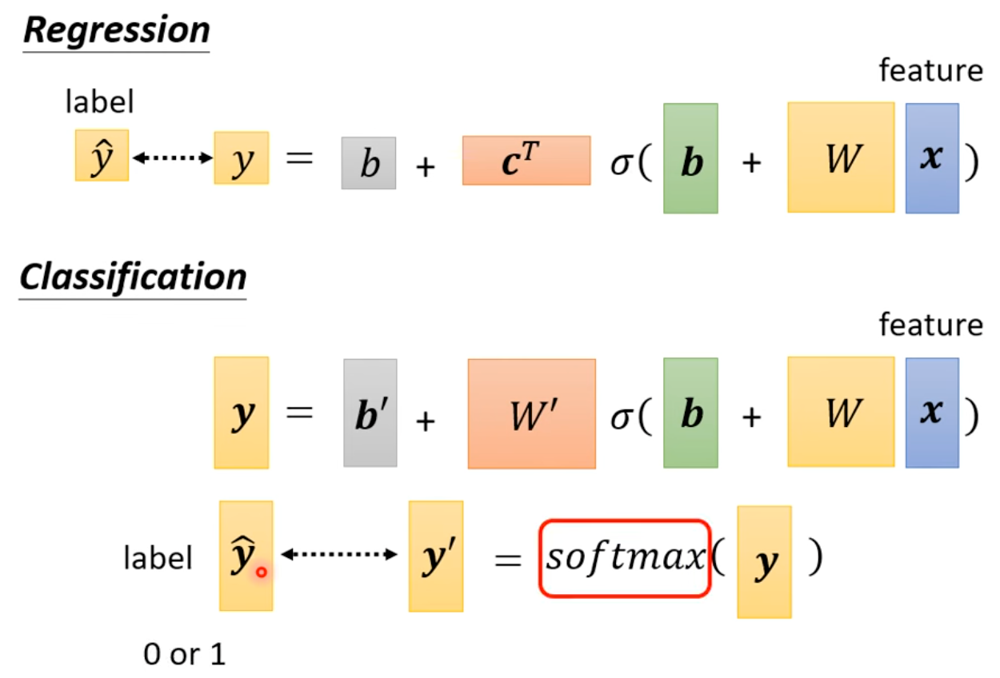
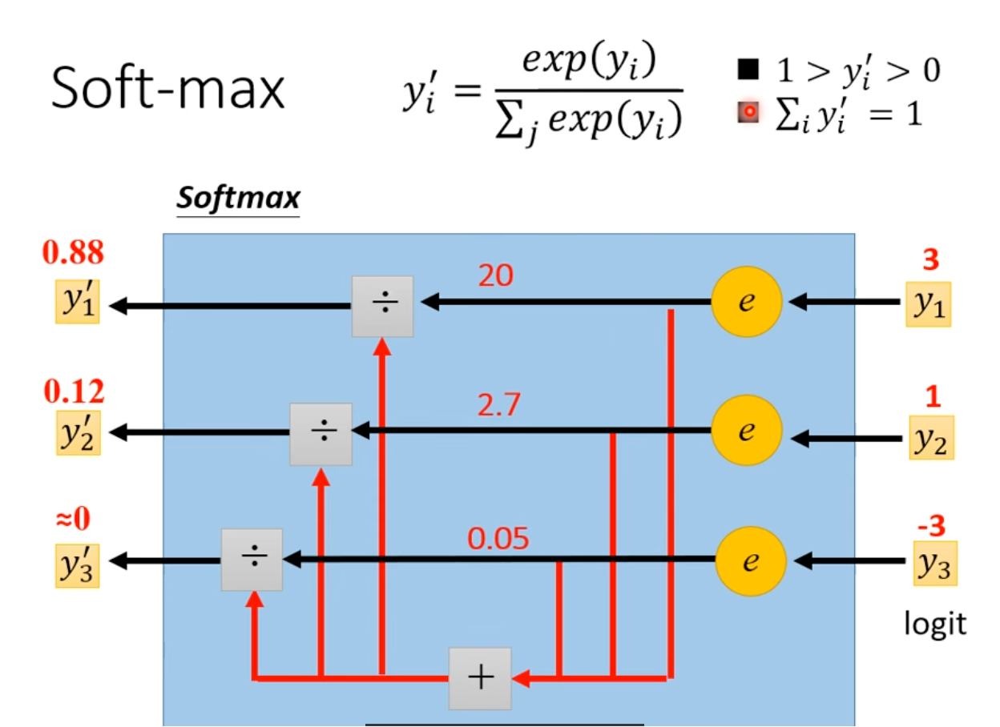
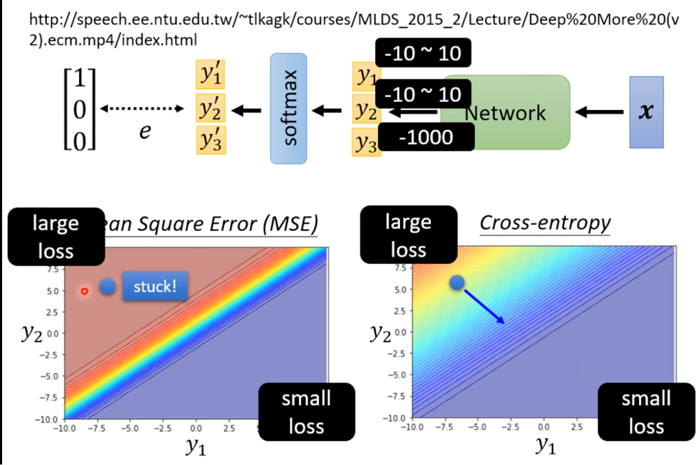

损失函数 Loss
针对分类问题中的标签问题,可以使用 one-hot vector 来表示,例如 class1 = [1 0 0], class2 = [0 1 0], class3 = [0 0 1].

这里的softmax是把y中的任意值归一化,其中exp(x)是以e为底的指数,目的是为了让最大和最小之间的差距更大.具体做法:

如果是两个判别类,使用sigmod和softmax,效果是一样的.
Loss of Classification
- mse:$ e = \displaystyle\sum_i(\hat{y_i}-y_i’)^2$
- Cross-entropy: $e=-\displaystyle\sum_i\hat{y_i}lny_i’$
minimizing cross-entropy is equivalent to maximizing likelihood
cross-entropy和softmax一般绑定使用,在pytorch中cross-ebtropy函数自带softmax了
为什么相较于MSE,Cross enropy更适合判断分类问题?

不用的主要原因是使用mse时,左上角的largeloss的范围很大,会导致起始的时候会比较难以降低loss,但是在ce之中梯度会比较明显.